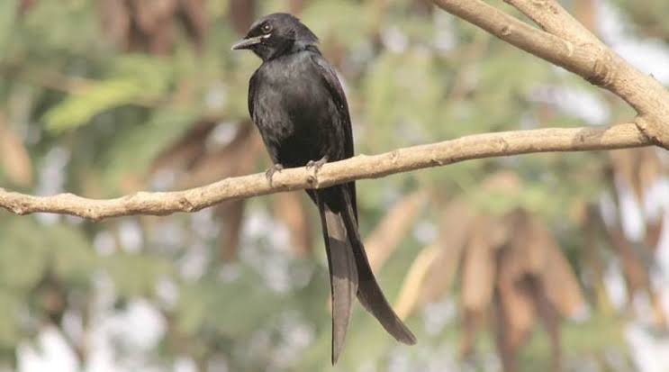

Black drongo
Birds
The black drongo is a small Asian passerine bird of the drongo family Dicruridae. It is a common resident breeder in much of tropical southern Asia from southwest Iran through India and Sri Lanka east to southern China and Indonesia and accidental visitor of Japan.
Scientific name: Dicrurus macrocercus
Family: Dicruridae
Conservation status: Least Concern Encyclopedia of Life
Phylum: Chordata
Higher classification: Dicrurus
Order: Passerine
The black drongo (Dicrurus macrocercus) is a small Asian passerine bird of the drongo family Dicruridae. It is a common resident breeder in much of tropical southern Asia from southwest Iran through India and Sri Lanka east to southern China and Indonesia and accidental visitor of Japan.
It is an all black bird with a distinctive forked tail and measures 28 cm (11 in) in length. It feeds on insects, and is common in open agricultural areas and light forest throughout its range, perching conspicuously on a bare perch or along power or telephone lines.
The species is known for its aggressive behaviour towards much larger birds, such as crows, never hesitating to dive-bomb any bird of prey that invades its territory. This behaviour earns it the informal name of king crow.
Smaller birds often nest in the well-guarded vicinity of a nesting black drongo. Previously grouped along with the African fork-tailed drongo (Dicrurus adsimilis), the Asian forms are now treated as a separate species with several distinct populations.
The black drongo has been introduced to some Pacific islands, where it has thrived and become abundant to the point of threatening and causing the extinction of native and endemic bird species there.
Biology of Black drongo
Avocets have long legs and they sweep their long, thin, upcurved bills from side to side when feeding in the brackish or saline wetlands they prefer. The plumage is pied, sometimes also with some red.
Members of this genus have webbed feet and readily swim. Their diet consists of aquatic insects and other small creatures.
They nest on the ground in loose colonies. In estuarine settings they may feed on exposed bay muds or mudflats.
The pied avocet is the emblem of the Royal Society for the Protection of Birds.
It is found in stubble, scrub, waste land, riverside sand and tidal flats on the coast. They avoid the interior of the desert zone, a habitat that is more likely to be used by the black-crowned sparrow-lark.
The two species overlap partly in range, although they are rarely seen together in the same locations. During the monsoon season, they withdraw from heavy rainfall regions.
Taxonomy and systematics
The black drongo was once considered a subspecies of the fork-tailed drongo (Dicrurus adsimilis), a close relative that diverged relatively recently.
The two are now considered distinct species, with the fork-tailed drongo restricted to Africa and separated from the Asian range of the black drongo.
Seven subspecies have been named but the largely contiguous populations show clinal variation and intergrade with each other. Individuals from northern India (ssp. albirictus) are larger than those from the Sri Lankan population minor while those from the peninsular India (nominate subspecies) are intermediate in size.
Race cathoecus is found in Thailand, Hong Kong and China. This race has a much smaller rictal spot and the wings are dark with a greenish gloss.
In southern Siam a race thai is resident, but overlaps with wintering cathoecus. Race javanus is found on the islands of Java and Bali. Race harterti found in Formosa has the tail length less than the wing.
Distribution and habitat
The black drongo is found predominantly in open country and usually perches and hunts close to the ground. They are mostly aerial predators of insects but also glean from the ground or off vegetation. They are found as summer visitors to northeastern
Afghanistan and northern Pakistan but are residents from the Indus Valley until Bangladesh and into India and Sri Lanka. Some populations show seasonal movements that are poorly understood while populations in Korea are known to be migratory.
The black drongo can be found in savanna, fields, and urban habitats.
Black drongos were introduced just before the Second World War from Taiwan to the island of Rota to help in the control of insects. It is believed that they dispersed over the sea to the island of Guam in the 1950s.
By 1967, they were the fourth most commonly seen birds in roadside counts on Guam and are today the most abundant bird there. Predation by and competition from black drongos have been suggested as factors in the decline of endemic bird species such as the Rota bridled white-eye and the Guam flycatcher.
Food and foraging
Black drongos become active very early at dawn and roost later than many other birds. They feed mainly on insects such as grasshoppers, cicadas, termites, wasps, bees, ants, moths, beetles and dragonflies.
They sometimes fly close to tree branches, attempting to disturb any insects that may be present. They congregate in fields being ploughed, picking up exposed caterpillars and beetle grubs. As many as 35 birds have been seen at such congregations.
They are also attracted to fires in scrub and grasslands habitats where insects are disturbed. They appear to avoid flies. They associate with common mynas, cattle egrets and other birds that share a similar diet and habitat.
Drongos benefit from this association and are more successful in their foraging. There is only partial overlap in the insect prey sought by mynas and drongos although in rare instances the drongos may rob prey from mynas.
It is said that they imitate the call of the shikra so as to put mynas to flight and then to steal prey. Similar behaviour, using false alarm calls, has been noted in the fork-tailed drongo. There are some cases of the black drongo preying on small birds, reptiles, or maybe even bats.
Nesting and breeding
Black drongos breed mainly in February and March in southern India, and until August in other parts of the country. Males and females sing in the mornings during the breeding season.
Courtship can include aerobatic chases and they may lock their wings and beaks together, with the pair sometimes falling to the ground. Displays may be made on the ground.
Pair bonds are retained for a whole breeding season. The nest is a cup made with a thin layer of sticks placed in the fork of branch, and is built in a week by both the male and female. Eggs are laid close to the first rains in April.
The usual clutch is three or rarely four eggs laid in a cup nest placed in the fork of an outer branch of tree. Large leafy trees such as the jackfruit are preferred.
The eggs are pale cream to red with spots and markings and are 26 mm (1.0 in) long and 19 mm (0.75 in) wide. The eggs are incubated by both parents and hatch after 14 to 15 days.
Nestlings are brooded for the first five days, after which the young are capable of maintaining a fairly constant body temperature. A second clutch may be laid if the first is destroyed.
Nests are sometimes built in telephone poles. A nesting territory of 0.003 to 0.012 km2 (0.3 to 1.2 hectares) is maintained.
Mobbing and proximity nesting
Their habit of driving away predators from near their nests is believed to encourage other birds such as orioles, doves, pigeons, babblers, and especially bulbuls, to nest in the vicinity. In one study 18 of 40 nests had red-vented bulbuls nesting within 10 metres (33 ft).
An abnormal case of interspecific feeding with a red-vented bulbul feeding the chicks of a black drongo at their nest has been recorded.
They are so aggressive that they may sometimes land on large birds of prey and peck them when mobbing. It has been suggested that the Asian drongo-cuckoo (Surniculus lugubris) has evolved to mimic this species
The intensity of mobbing predators was studied in Java and observations showed that there was a significant increase in mobbing, during the nesting season, of some predators such as the Javan hawk-eagle but the black eagle, a nest predator is mobbed with
equal intensity in all seasons. It has been suggested that this strategy may avoid giving away the location of nests during the breeding season.